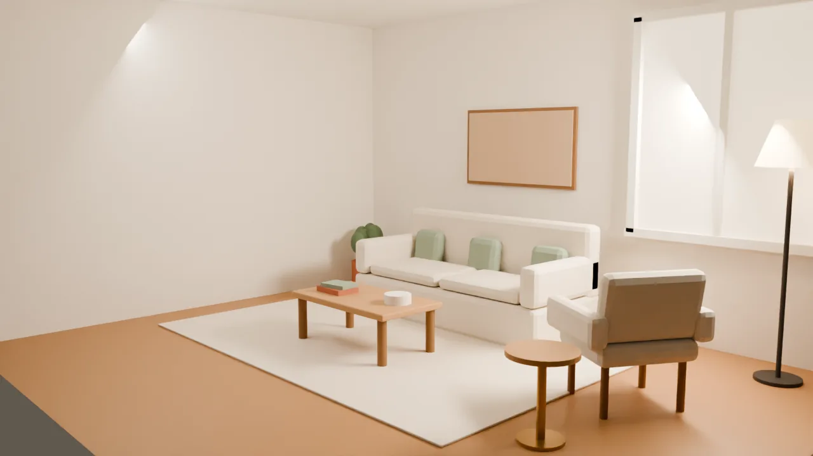

Listen
We walk the space, talk about routines, light and the things you want to keep. No mood boards yet.
Warm, quiet interiors shaped by natural materials, honest light and the way people actually live. Selected work and visual studies by Nkugwa Mark William.

Five rooms, modelled and measured in Blender, then published as orbitable 3D models. Open any room to move around it.
I am Nkugwa Mark William, an interior designer and spatial storyteller working between Kampala and the wider East African region. My work begins with how a room is used — where the light lands, where people pause, what the space should feel like at seven in the morning and again at nine at night.
Every room is modelled at full scale and tested against researched dimensions — 450 mm seat heights, 750 mm dining tables, 900 mm worktops, 600 mm bed clearances and a compact kitchen work triangle. From there, the palette stays disciplined: timber, stone, linen, clay and a little brass.
“Good interiors do not ask for attention. They give it back.”
A simple, transparent process from first conversation to the final cushion.
We walk the space, talk about routines, light and the things you want to keep. No mood boards yet.
Layouts, material directions and a first visual study — enough to test the feeling before committing.
Samples, joinery details, lighting and a costed schedule. We edit until only the necessary remains.
Procurement, installation and styling, with the room finished down to the last object.
Available for residential interiors, styling and visual studies. Share a few lines about your space and timeline.
hello@nkugwamarkwilliam.com